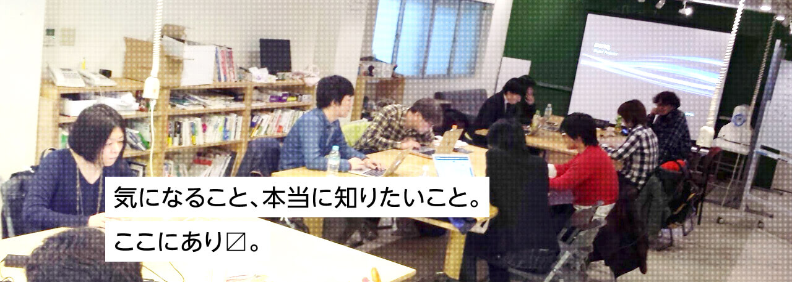

活動紹介
第6回 D2D アクセシビリティ勉強会
2015年6月21日 日曜日 13時30分 ～ 18時
会場:JUSO Coworking 405号
「アクセシビリティ」を語るより実際にやってみよう！な勉強会第6弾です。今回は、第5回で選ばれたデザインを元にフォームのマークアップをやります！勉強会の内容は続き物ではありません。初めての方でも、是非お気軽にご参加くださいませ。さらに実践に役立つ?イジワル問題も作成しているので、それも一緒にマークアップしていきますw。
 詳細はこちら
詳細はこちら
関連記事
- 2015年5月7日
- 第5回 D2D アクセシビリティ勉強会振り返り
- 2015年5月21日
- D2D ディレクション アンカンファレンス vol.1 ヒアリング
- 2015年6月26日
- 第6回 D2D アクセシビリティ勉強会でアクセシブルなフォームを作成!
D2Dとは
ウェブのテクニカルな内容とデザイン的な内容を横断した、
特定のプロダクトや技術に限定しない勉強会。
D2Dとは、Dev & Design Draftの略。
“Draft”とは、草案、下書き状態の情報やアイディアを交換するところ。
特定の技術やプロダクトに限定せずに、Web制作者が今イチバン気になる情報を知ろうという領域横断型の勉強会シリーズ。関西エリアで開催している「語るより実際にやってみよう！」な勉強会。
お問合せ
D2Dへのお問合せは以下の各項目へ、入力・選択してください。
必須の付いている項目は必ずご記入ください。